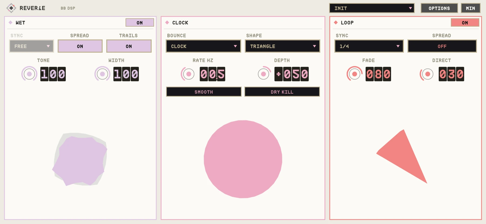
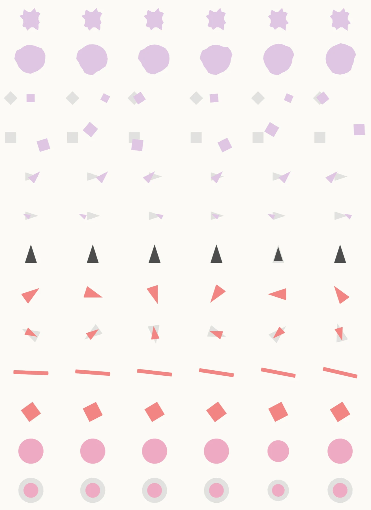

OVERVIEW
REVERiE has three cards. WET is a reverb, a delay, or SLIP (a pitch-stepped echo). LOOP is a tiny looper that is always recording, so pressing ON catches what you just played. CLOCK sits between them and sets the sample rate both run at: lower it and everything gets longer, darker and grittier.
ROUTING decides whether the wet channel hears your input, the loop, or both, so the two can feed each other.


QUICK START
- 01Insert REVERiE on any track and play.
- 02Pick a WET mode and set its TIME and MODIFY.
- 03Tap the LOOP footswitch to catch the last couple of seconds as a loop.
- 04Lower CLOCK for longer, lo-fi time.
HOW IT WORKS
Footswitches
Each card's ON button is a footswitch: tap to toggle, hold for a moment to FREEZE (WET) or DUB (LOOP) only while held.
Touch pads
Each animation is an XY pad. Drag to move two controls at once; hold SHIFT for fine moves; double-click to reset.
Everything smoothed
Mode changes, freezes, overdubs and routing changes crossfade, so nothing clicks.
CONTROLS
Values in the dark wells are the defaults.
WET
CLOCK
LOOP
OPTIONS
TIPS
- Catch a loop, then set ROUTING to LOOP and FREEZE the reverb for an instant ambient bed.
- A low CLOCK on the delay gives dark, tape-like echoes.
SPECS
- TYPE
- Audio effect (AU aufx), VST3, Standalone
- INPUT
- Mono or stereo
- OUTPUT
- Stereo